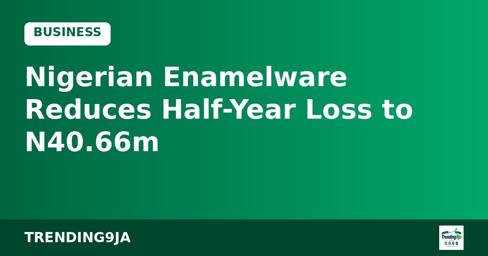

FG Oil Revenue Drops by N1.44tn in First Half of 2026 Despite Price Surge
Nigeria's gross oil revenue fell by N1.44tn in H1 2026 despite higher global oil prices, according to a report by the Budget Office cited by Punch.

Nigerian Enamelware Plc has trimmed its half-year loss to N40.66m for the six-month period ended October 31, 2026, down from the N86.15m deficit recorded in the corresponding period of 2025, according to financial reports cited by Punch.
The manufacturing company presented its unaudited second-quarter financial filings for the 2026/2027 operational cycle after obtaining board approval on November 19, 2026. The financial statement, signed by Managing Director Taiwo Alli and Finance Manager Babatunde Adeoye, revealed that half-year revenue between May 1 and October 31 rose to N478.79m from N451.12m in the previous year.
However, total turnover for the second quarter alone, running from August 1 to October 31, 2026, declined to N247.08m compared to N404.51m made during the matching quarter in 2025. Despite the slide in quarterly revenue, the company successfully lowered its quarterly loss to N3.14m from N5.63m.
The overall balance sheet showed a rebound in gross performance, with half-year gross profit reaching N45.54m compared to a gross loss of N46.45m reported in 2025. Punch noted that a drop in the cost of sales from N497.57m to N433.26m played a major role in driving the profit recovery.
Data from the statement of financial position indicated that total assets increased to N2.97bn by late October 2026, up from N2.74bn recorded in October 2025. On the other hand, total current liabilities expanded to N3.82bn from N3.55bn a year earlier, leaving net liabilities at N849.54m.
Nigerian Enamelware Plc operates on the Main Board of the Nigerian Exchange, producing plastic items, enamelware, and galvanised buckets. Its parent firm, Hong Kong-based I-Feng Limited, maintains a controlling 60 per cent ownership in the entity.
Sources: Punch
← More Business stories
Nigeria's gross oil revenue fell by N1.44tn in H1 2026 despite higher global oil prices, according to a report by the Budget Office cited by Punch.

NISO has restored all transmission lines after a Friday grid disturbance caused load losses across parts of Nigeria, clarifying it was not a total system collapse.

Nigeria is set to launch the export phase of the National Single Window in December 2026 to simplify trade procedures following record non-oil exports.
Nigeria's trending news, politics and entertainment, straight to your email.
By subscribing you agree to our Privacy Policy. Unsubscribe any time.